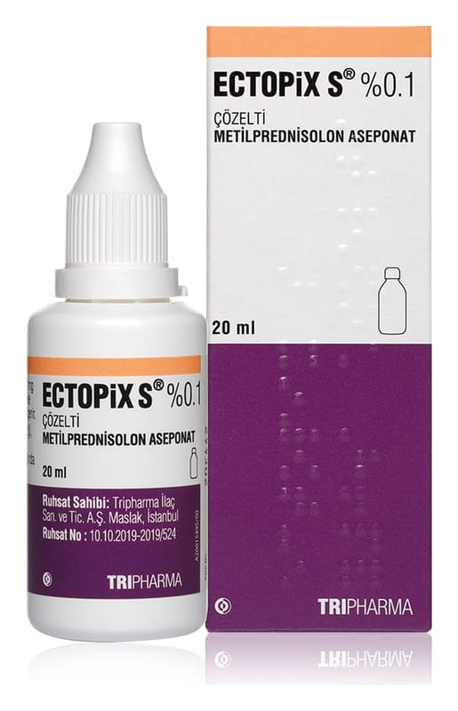

Ectopix S %0.1 Çözelti, 20 ml

Ne için kullanılır
KT · Bölüm 1ECTOPİX S iltihabi ve alerjik deri reaksiyonlarını baskılar ve kızarıklık, deri kalınlaşması, deri yüzeyinde tabaka oluşumu, ödem, kaşıntı ve diğer şikayetler (yanma hissi veya ağrı) gibi deri sorunlarından kaynaklanan belirtileri hafifletir.
ECTOPİX S saçlı deride görülen iltihabi ve kaşıntılı deri hastalığının tedavisinde; örneğin ani gelişen ekzema (sinirsel nedenlere bağlı deride kabartılı ve kızarıklıklarla seyreden kaşıntılı kronik deri iltihabı), seboreik ekzema (kızarık saha üzerinde sarı, hafifçe yağlı ve kuru kabuklar halinde görülen döküntüler) temas ekzeması, kaşıntılı deride madeni para şeklinde döküntülerle seyreden ekzema, herhangi başka bir şekilde sınıflandırılmamış olan ekzemada kullanılır.
ECTOPİX S 20 ml, PE şişede, LDPE damlalıklı ve HDPE kapak ile birlikte karton kutu içerisinde kullanıma sunulmaktadır.